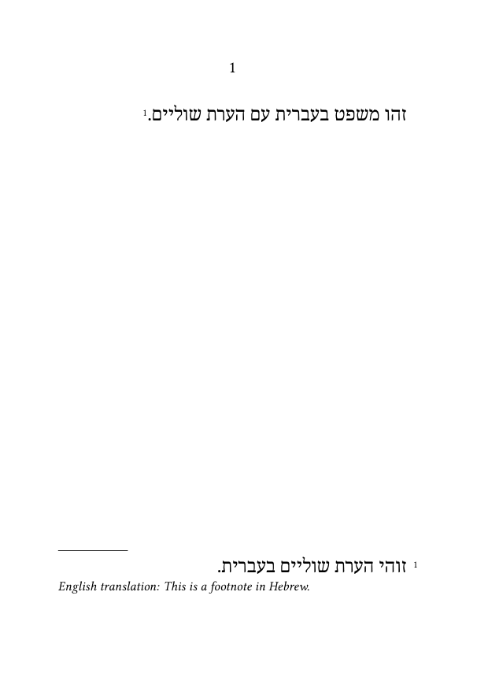
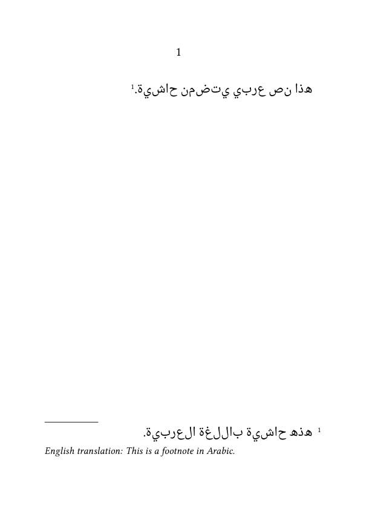
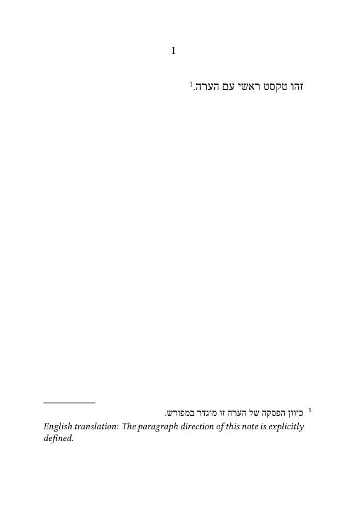
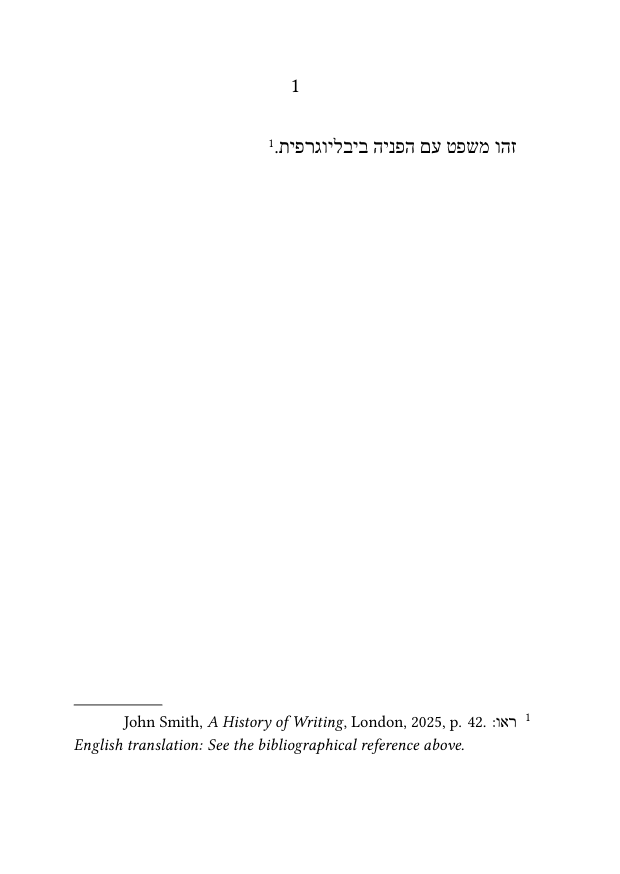
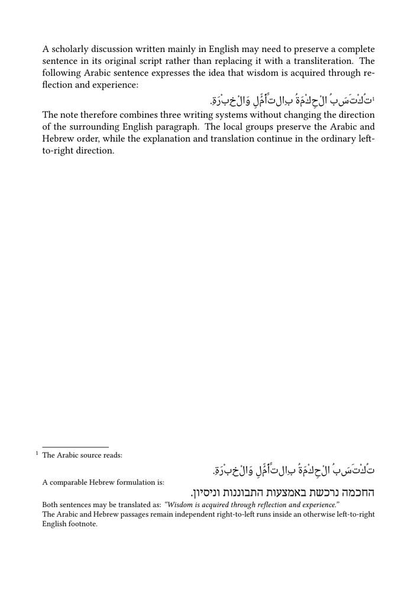
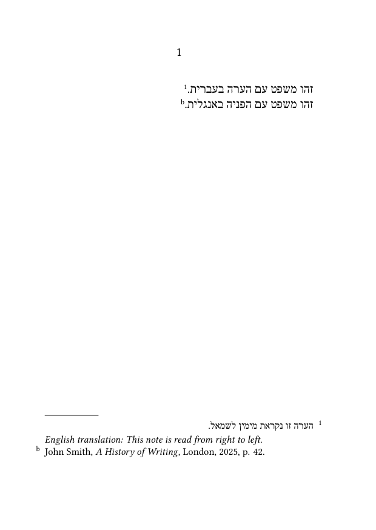
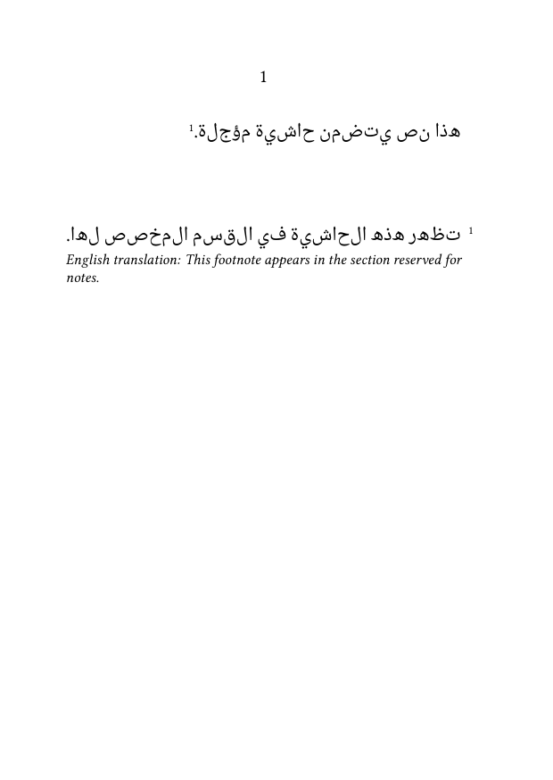
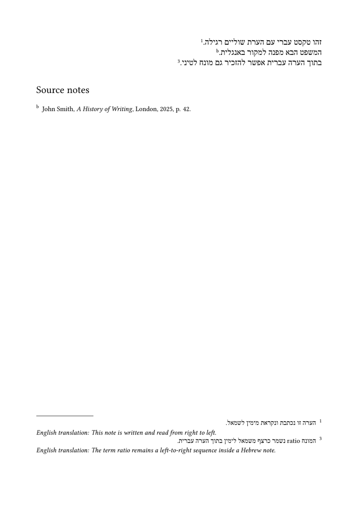

Footnotes in ConTeXt · Overview · Tutorial · How-to guides · Typesetting notes in bidirectional documents · Reference · Explanation · Glossary
The Hebrew and Arabic examples are intended to use Noto Serif Hebrew and Noto Naskh Arabic.
Their exact ConTeXt font names, shaping, note-number placement, punctuation, and final wiki output must be tested after these fonts have been installed on the ConTeXt Garden server.
Special scripts and advanced content · Previous: Creating interactive footnotes · How-to guides overview · Next: Including verbatim material in footnotes
Contents
- 1 1. Goal
- 2 2. Separate script, language, direction, and alignment
- 3 3. Enable Unicode bidirectional processing
- 4 4. Select suitable fonts and script features
- 5 5. Typeset an RTL paragraph with an RTL footnote
- 6 6. Apply direction settings explicitly to a note series
- 7 7. Insert LTR material inside an RTL note
- 8 8. Insert RTL material inside an LTR note
- 9 9. Control note alignment and number placement
- 10 10. Check punctuation around note marks
- 11 11. Use separate series for different directions
- 12 12. Use postponed notes in an RTL document
- 13 13. Test footnote rules and page geometry
-
14
14. Common mistakes
- 14.1 14.1. Enabling RTL alignment without bidirectional processing
- 14.2 14.2. Using a font without the required script support
- 14.3 14.3. Treating direction and right alignment as the same operation
- 14.4 14.4. Changing direction without grouping
- 14.5 14.5. Assuming that notes inherit every running-text setting
- 14.6 14.6. Forcing note numbers LTR without first testing the default
- 14.7 14.7. Ignoring punctuation near note marks
- 14.8 14.8. Testing only one short note
- 14.9 14.9. Testing with a substitute font only
- 15 15. Complete example
- 16 16. What this guide has established
- 17 17. Next steps
1. Goal
Typeset note marks and note entries correctly in documents that combine right-to-left and left-to-right writing.
This includes:
- Hebrew or Arabic running text with notes in the same language;
- right-to-left text with English or other Latin-script bibliographical references;
- left-to-right text containing Hebrew, Arabic, or Persian quotations;
- separate note series using different paragraph directions;
- mixed-direction content inside one note entry;
- postponed notes in a bidirectional document.
Result
The script, language, paragraph direction, note mark, note number, and note entry can be configured as separate but coordinated parts of the note system.
2. Separate script, language, direction, and alignment
A bidirectional note system involves more than choosing a language or aligning a paragraph to the right.
Check the following elements separately:
| Element | Question | Typical configuration |
|---|---|---|
| Font and script | Does the font contain the required glyphs and shaping support? | OpenType font and script feature |
| Running-text direction | Is the paragraph composed from right to left or left to right? | \setupalign[r2l] or \setupalign[l2r]
|
| Bidirectional processing | Are mixed directional runs reordered according to Unicode rules? | \setupdirections[bidi=global,method=unicode]
|
| Note mark | Does the mark appear on the intended side of punctuation? | source order, direction, and punctuation testing |
| Note number | Is the number ordered and placed correctly in the note entry? | notation settings and, when necessary, a number command |
| Note text | Does the entry use the intended paragraph direction? | note-series setup and notation alignment |
Direction and alignment are related but distinct
Right-to-left direction controls the logical order in which directional runs are composed.
Right alignment controls where the resulting paragraph is placed within its measure.
Do not try to repair a missing glyph, incorrect Arabic joining, or unsuitable font by changing note alignment.
3. Enable Unicode bidirectional processing
Enable Unicode bidirectional processing with:
\setupdirections [bidi=global, method=unicode]
Then establish the direction of the paragraph:
\setupalign[r2l]
The two commands perform different tasks:
| Command | Role |
|---|---|
\setupdirections[bidi=global,method=unicode]
|
Enables Unicode bidirectional processing for mixed directional runs. |
\setupalign[r2l]
|
Establishes a right-to-left paragraph context. |
Use both mechanisms
Right-to-left paragraph composition without Unicode bidirectional processing may fail when the text contains numbers, punctuation, abbreviations, or embedded Latin-script material.
4. Select suitable fonts and script features
Right-to-left scripts require:
- a font containing the required glyphs;
- an appropriate OpenType script feature;
- correct shaping support;
- a font size suitable for both running text and notes.
Use descriptive feature names rather than generic names that might conflict with another environment.
4.1. Hebrew font configuration
The intended Hebrew font for the wiki examples is Noto Serif Hebrew:
\definefontfeature [notes-hebrew] [default] [script=hebr] \definefont [HebrewFont] [name:notoserifhebrew*notes-hebrew at 11pt]
4.2. Arabic font configuration
The intended Arabic font is Noto Naskh Arabic:
\definefontfeature [notes-arabic] [default] [script=arab, language=dflt] \definefont [ArabicFont] [name:notenaskharabic*notes-arabic at 11pt]
Provisional font-resolver names
The normalized names notoserifhebrew and notenaskharabic must be verified after installation on the wiki server.
If ConTeXt reports that a font cannot be found, inspect the installed font database before changing the MWE.
Direction cannot repair a missing font
If letters are absent or Arabic joining is incorrect, verify the font and OpenType feature before changing the footnote settings.
5. Typeset an RTL paragraph with an RTL footnote
The simplest bidirectional case uses the same right-to-left language in both the running text and the note.
5.1. MWE: Hebrew running text and Hebrew footnote
-
\setuppapersize[A6] \setupbodyfont [libertinus,10pt] \setupdirections [bidi=global, method=unicode] \definefontfeature [notes-hebrew] [default] [script=hebr] \definefont [HebrewFont] [name:notoserifhebrewregular*notes-hebrew at 11pt] \setupalign[r2l] \starttext {\HebrewFont זהו משפט בעברית עם הערת שוליים.}\footnote {{\HebrewFont זוהי הערת שוליים בעברית.} \blank[small] {\lefttoright \it English translation: This is a footnote in Hebrew.}} \stoptext
-

The running sentence means:
This is a sentence in Hebrew with a footnote.
The note itself contains:
- the original Hebrew note text;
- an English translation in a local left-to-right run.
One note, two directional runs
The note paragraph is primarily right to left, while the English translation is explicitly composed from left to right.
5.2. MWE: Arabic running text and Arabic footnote
-
\setuppapersize[A6] \setupbodyfont [libertinus,10pt] \setupdirections [bidi=global, method=unicode] \definefontfeature [notes-arabic] [default] [script=arab, language=dflt] \definefont [ArabicFont] [name:notonaskharabicregular*notes-arabic at 11pt] \setupalign[r2l] \starttext {\ArabicFont هذا نص عربي يتضمن حاشية.}\footnote {{\ArabicFont هذه حاشية باللغة العربية.} \blank[small] {\lefttoright \it English translation: This is a footnote in Arabic.}} \stoptext
-

The running sentence means:
This is an Arabic text containing a footnote.
The English translation inside the note provides both a pedagogical gloss and a test of mixed RTL/LTR composition.
Arabic shaping must be checked in the PDF
Correct character order is not enough. Verify that the Arabic letters join correctly and that diacritics, punctuation, and note marks remain properly placed.
6. Apply direction settings explicitly to a note series
In a complex document, a note entry may not inherit every local direction setting from the running text.
A named setup makes the intended direction explicit for the note series.
6.1. MWE: explicit RTL setup for Hebrew footnotes
-
\setuppapersize[A6] \setupbodyfont [libertinus,10pt] \setupdirections [bidi=global, method=unicode] \definefontfeature [notes-hebrew] [default] [script=hebr] \definefont [HebrewFont] [name:notoserifhebrew*notes-hebrew at 11pt] \startsetups[notes:rtl] \setupdirections [bidi=global, method=unicode] \setupalign[r2l] \stopsetups \setupnote [footnote] [setups=notes:rtl, bodyfont=small] \setupnotation [footnote] [align=r2l] \setupalign[r2l] \starttext {\HebrewFont זהו טקסט ראשי עם הערה.}\footnote {{\HebrewFont כיוון הפסקה של הערה זו מוגדר במפורש.} \blank[small] {\lefttoright \it English translation: The paragraph direction of this note is explicitly defined.}} \stoptext
-

Why use a note setup?
A named setup makes the intended direction local to the note series and reduces the risk that unrelated paragraph settings will alter the entries.
The use of align=r2l must still be checked visually. It does not remove the need to inspect the note number, punctuation, and directional runs.
7. Insert LTR material inside an RTL note
Bibliographical references, dates, abbreviations, URLs, and English translations may require a local left-to-right run.
Use \lefttoright inside a group:
{\lefttoright
John Smith, \emph{A History of Writing}, 2025, p. 42}
7.1. MWE: English bibliography inside a Hebrew note
-
\setuppapersize[A6] \setupbodyfont [libertinus,10pt] \setupdirections [bidi=global, method=unicode] \definefontfeature [notes-hebrew] [default] [script=hebr] \definefont [HebrewFont] [name:notoserifhebrew*notes-hebrew at 11pt] \setupalign[r2l] \starttext {\HebrewFont זהו משפט עם הפניה ביבליוגרפית.}\footnote {{\HebrewFont ראו:} {\lefttoright John Smith, \emph{A History of Writing}, London, 2025, p. 42.} \blank[small] {\lefttoright \it English translation: See the bibliographical reference above.}} \stoptext
-

The local group prevents the LTR direction from affecting the rest of the note.
Group local direction changes
A local \lefttoright command should normally be enclosed in braces so that it does not leak into the remainder of the paragraph.
8. Insert RTL material inside an LTR note
An English or French note may contain an Arabic or Hebrew quotation.
Use \righttoleft for the local RTL run and select the appropriate font.
8.1. MWE: Arabic and Hebrew material inside an English footnote
The following example uses an English paragraph as the main left-to-right context. It contains:
- a complete Arabic sentence in the running text;
- an English footnote attached to that sentence;
- an Arabic passage inside the footnote;
- a Hebrew parallel expression inside the same footnote;
- an English explanation after the two right-to-left passages.
Each Arabic or Hebrew passage is enclosed in its own local
\righttoleft group. The surrounding paragraph and the footnote
remain left to right.
-
\setuppapersize[A5] \setupbodyfont [libertinus,10pt] \setuplayout [topspace=15mm, backspace=15mm, header=0mm, footer=8mm, width=middle, height=middle] \setupdirections [bidi=global, method=unicode] \definefontfeature [notes-arabic] [default] [script=arab, language=dflt] \definefontfeature [notes-hebrew] [default] [script=hebr, language=dflt] \definefont [ArabicFont] [name:notonaskharabicregular*notes-arabic at 11pt] \definefont [HebrewFont] [name:notoserifhebrewregular*notes-hebrew at 11pt] \setupalign[l2r] \starttext A scholarly discussion written mainly in English may need to preserve a complete sentence in its original script rather than replacing it with a transliteration. The following Arabic sentence expresses the idea that wisdom is acquired through reflection and experience: \blank[small] {\ArabicFont\righttoleft تُكْتَسَبُ الْحِكْمَةُ بِالتَّأَمُّلِ وَالْخِبْرَةِ.}\footnote {The Arabic source reads: \blank[small] {\ArabicFont\righttoleft تُكْتَسَبُ الْحِكْمَةُ بِالتَّأَمُّلِ وَالْخِبْرَةِ.} \blank[small] A comparable Hebrew formulation is: \blank[small] {\HebrewFont\righttoleft החכמה נרכשת באמצעות התבוננות וניסיון.} \blank[small] Both sentences may be translated as: {\it “Wisdom is acquired through reflection and experience.”} The Arabic and Hebrew passages remain independent right-to-left runs inside an otherwise left-to-right English footnote.} \blank[small] The note therefore combines three writing systems without changing the direction of the surrounding English paragraph. The local groups preserve the Arabic and Hebrew order, while the explanation and translation continue in the ordinary left-to-right direction. \stoptext
-

Compile the example and check that:
- the English paragraphs remain left to right;
- the Arabic sentence in the running text is shaped and ordered correctly;
- the note mark appears in the intended position after the Arabic sentence;
- the footnote itself remains an English left-to-right paragraph;
- the Arabic passage inside the note is composed right to left;
- the Hebrew passage inside the note is composed right to left;
- punctuation remains attached to the correct directional run;
- the final English translation resumes the left-to-right direction correctly.
Several RTL runs inside one LTR note
The footnote does not need to become a right-to-left paragraph merely because it contains Arabic and Hebrew material. Each embedded passage can be treated as a local RTL run, while the note as a whole retains its English LTR structure.
9. Control note alignment and number placement
Right-to-left note entries may require explicit notation settings:
\setupnotation [footnote] [align=r2l, alternative=serried, width=broad]
These settings affect the entry layout, but the complete result must be inspected.
Check separately:
- the paragraph edge;
- the position of the number;
- the order of the number and note text;
- punctuation after the number;
- line wrapping in long entries.
Test number placement separately
A right-to-left note paragraph can still have an incorrectly ordered or misplaced number.
Inspect the complete entry, not only its right edge.
9.1. Keep Latin note numbers LTR only when necessary
Hebrew or Arabic notes may use the digits 1, 2, 3.
The Unicode bidirectional mechanism may already produce the intended order. Do not add a correction unless the compiled output demonstrates a problem.
A possible targeted command is:
\define[1]\LTRNoteNumber
{{\lefttoright#1}}
It can then be applied with:
\setupnotation [footnote] [numbercommand=\LTRNoteNumber]
Use a number wrapper only after testing
A forced LTR number is a correction for a demonstrated ordering problem, not a universal requirement for RTL notes.
10. Check punctuation around note marks
Neutral punctuation may be reordered according to the surrounding directional runs.
The source forms:
text\footnote{...}.
and:
text.\footnote{...}
may produce different results in an RTL paragraph.
The appropriate order depends on:
- the editorial convention;
- the language;
- the punctuation mark;
- the surrounding directional runs;
- the note-mark configuration.
Inspect punctuation in the compiled output
Do not infer the final visual order from the source order alone. Unicode bidirectional processing may reposition neutral punctuation.
Test at least:
- a full stop;
- a comma;
- a colon;
- parentheses;
- quotation marks;
- two closely spaced note marks.
11. Use separate series for different directions
A bilingual or multilingual edition may require:
- ordinary notes in the main RTL language;
- source notes in English or French;
- translator's notes in another language.
Different note series can use different paragraph-direction setups.
11.1. MWE: Hebrew footnotes and English source notes
-
\setuppapersize[A6] \setupbodyfont [libertinus,10pt] \setupdirections [bidi=global, method=unicode] \definefontfeature [notes-hebrew] [default] [script=hebr] \definefont [HebrewFont] [name:notoserifhebrew*notes-hebrew at 11pt] \definenote [SourceNote] [footnote] \startsetups[notes:rtl] \setupdirections [bidi=global, method=unicode] \setupalign[r2l] \stopsetups \startsetups[notes:ltr] \setupalign[l2r] \stopsetups \setupnote [footnote] [setups=notes:rtl, bodyfont=small] \setupnotation [footnote] [align=r2l, numberconversion=numbers] \setupnote [SourceNote] [setups=notes:ltr, bodyfont=small] \setupnotation [SourceNote] [align=l2r, numberconversion=characters] \setupalign[r2l] \starttext {\HebrewFont זהו משפט עם הערה בעברית.}\footnote {{\HebrewFont הערה זו נקראת מימין לשמאל.} \blank[small] {\lefttoright \it English translation: This note is read from right to left.}} {\HebrewFont זהו משפט עם הפניה באנגלית.}\SourceNote {John Smith, \emph{A History of Writing}, London, 2025, p. 42.} \stoptext
-

Separate structure supports separate direction
Different note series can use different paragraph directions without changing the direction of the running text.
For the creation of custom note series, see:
12. Use postponed notes in an RTL document
Postponed notes should retain their direction when their note series is configured explicitly.
12.1. MWE: postponed Arabic footnotes
-
\setuppapersize[A6] \setupbodyfont [libertinus,10pt] \setupdirections [bidi=global, method=unicode] \definefontfeature [notes-arabic] [default] [script=arab, language=dflt] \definefont [ArabicFont] [name:notonaskharabicregular*notes-arabic at 11pt] \startsetups[notes:rtl] \setupdirections [bidi=global, method=unicode] \setupalign[r2l] \stopsetups \setupnote [footnote] [location=text, setups=notes:rtl, bodyfont=small] \setupnotation [footnote] [align=r2l] \setupalign[r2l] \starttext {\ArabicFont هذا نص يتضمن حاشية مؤجلة.}\footnote {{\ArabicFont تظهر هذه الحاشية في القسم المخصص لها.} \blank[small] {\lefttoright \it English translation: This footnote appears in the section reserved for notes.}} {\ArabicFont \subject{الحواشي}} \placefootnotes \stoptext
-

Inspect separately:
- the direction of the heading;
- the placement of the note block;
- the paragraph direction of the entry;
- the English translation;
- the note number and punctuation.
For postponed placement, see:
13. Test footnote rules and page geometry
Rules above footnotes may require special testing in RTL layouts.
Begin with a simple rule:
\setupnote [footnote] [rule=on]
Then inspect:
- the rule position;
- its starting and ending edges;
- the distance between the rule and the entries;
- the behaviour on recto and verso pages;
- the interaction between the rule and paragraph direction.
Version-sensitive behaviour
Recent LMTX versions have included changes related to the alignment of paragraph-style footnote rules in RTL text.
Test the exact ConTeXt version used for publication before relying on a complex rule design.
Page geometry also matters. A correctly directed note may still be difficult to read when:
- the text measure is too narrow;
- the note number occupies too much horizontal space;
- mixed-language references produce long unbreakable runs;
- the selected RTL font is too large or too small relative to the main body font.
14. Common mistakes
14.1. Enabling RTL alignment without bidirectional processing
Use Unicode bidirectional processing together with the intended paragraph direction.
14.2. Using a font without the required script support
Direction settings cannot provide missing glyphs or repair incorrect Arabic shaping.
14.3. Treating direction and right alignment as the same operation
Direction controls the logical composition of directional runs.
Alignment controls the placement of the paragraph within its measure.
14.4. Changing direction without grouping
Enclose local \lefttoright and \righttoleft runs in braces.
14.5. Assuming that notes inherit every running-text setting
Apply a named setup to the note series when its direction must be guaranteed.
14.6. Forcing note numbers LTR without first testing the default
Add a number wrapper only after identifying an actual ordering problem.
14.7. Ignoring punctuation near note marks
Numbers, parentheses, colons, full stops, and quotation marks often reveal bidirectional problems first.
14.8. Testing only one short note
Use:
- several note numbers;
- one long note;
- mixed-language bibliography;
- local English translations;
- punctuation before and after note marks;
- notes near the bottom of a page.
14.9. Testing with a substitute font only
A MWE that works with one Hebrew or Arabic font may behave differently with another.
Retest the examples with the exact Noto fonts installed on the wiki server.
Most frequent diagnostic error
A problem caused by the font, script feature, or Unicode direction is treated as though it were only a footnote-formatting problem.
Test each layer separately.
15. Complete example
The following provisional MWE combines:
- Hebrew running text;
- Noto Serif Hebrew;
- global Unicode bidirectional processing;
- explicit RTL settings for ordinary footnotes;
- an English translation inside each Hebrew note;
- a separate LTR source-note series;
- postponed source-note placement;
- independent numbering styles.
15.1. MWE: Hebrew notes and English source notes
-
\setuppapersize[A5] \setupbodyfont [libertinus,10pt] \setuplayout [topspace=15mm, backspace=15mm, header=0mm, footer=8mm, width=middle, height=middle] \setupdirections [bidi=global, method=unicode] \definefontfeature [notes-hebrew] [default] [script=hebr] \definefont [HebrewFont] [name:notoserifhebrew*notes-hebrew at 11pt] \definenote [SourceNote] [footnote] \startsetups[notes:rtl] \setupdirections [bidi=global, method=unicode] \setupalign[r2l] \stopsetups \startsetups[notes:ltr] \setupalign[l2r] \stopsetups \setupnote [footnote] [setups=notes:rtl, bodyfont=small] \setupnotation [footnote] [align=r2l, numberconversion=numbers, alternative=serried, width=broad] \setupnote [SourceNote] [location=text, setups=notes:ltr, bodyfont=small] \setupnotation [SourceNote] [align=l2r, numberconversion=characters, alternative=serried, width=broad] \setupalign[r2l] \starttext {\HebrewFont זהו טקסט עברי עם הערת שוליים רגילה.}\footnote {{\HebrewFont הערה זו נכתבת ונקראת מימין לשמאל.} \blank[small] {\lefttoright \it English translation: This note is written and read from right to left.}} {\HebrewFont המשפט הבא מפנה למקור באנגלית.}\SourceNote {John Smith, \emph{A History of Writing}, London, 2025, p. 42.} {\HebrewFont בתוך הערה עברית אפשר להזכיר גם מונח לטיני.}\footnote {{\HebrewFont המונח} {\lefttoright ratio} {\HebrewFont נשמר כרצף משמאל לימין בתוך הערה עברית.} \blank[small] {\lefttoright \it English translation: The term ratio remains a left-to-right sequence inside a Hebrew note.}} \setupalign[l2r] \subject{Source notes} \placenotes[SourceNote] \stoptext
-

Compile the example and check that:
- the Hebrew running text is composed from right to left;
- the Hebrew footnote entries are composed and aligned RTL;
- each Hebrew note contains a readable LTR English translation;
- ordinary note numbers remain correctly ordered and positioned;
- the English source note is composed LTR;
-
the Latin word
ratioremains in the correct order; - punctuation near every note mark appears as intended;
- the postponed source-note block remains LTR;
- the selected Noto font remains legible at both main-text and note sizes.
Final validation still required
This MWE should not be considered final until it has been compiled on the wiki server with Noto Serif Hebrew.
A corresponding Arabic synthesis example may be added after Noto Naskh Arabic has also been installed and validated.
16. What this guide has established
To typeset notes in bidirectional documents:
- distinguish font and script support from paragraph direction and alignment;
-
enable Unicode bidirectional processing with
\setupdirections; - select fonts with the appropriate OpenType script features;
- establish the running-text direction explicitly;
- apply named setups to note series when their direction must be preserved;
-
group local
\lefttorightand\righttoleftruns; - provide English translations as explicit LTR runs when they accompany Hebrew or Arabic note text;
- configure note-entry alignment separately;
- use separate note series for categories requiring different directions;
- inspect note numbers, punctuation, marks, rules, and page geometry;
- test the exact fonts and LMTX version used for publication.
The central principle is that script, language, bidirectional processing, paragraph direction, alignment, and note structure must be configured as separate but coordinated layers.
17. Next steps
17.1. Continue with the next guide
- Define and manage multiple note series
- Place footnotes at the end of a section or chapter
- Format footnotes
17.3. Consult the documentation
- Consult the note-command reference
- Understand the note mechanism
- Check the terminology used in the footnote documentation
Special scripts and advanced content · Previous: Creating interactive footnotes · How-to guides overview · Next: Including verbatim material in footnotes
Footnotes in ConTeXt · Overview · Tutorial · How-to guides · Typesetting notes in bidirectional documents · Reference · Explanation · Glossary